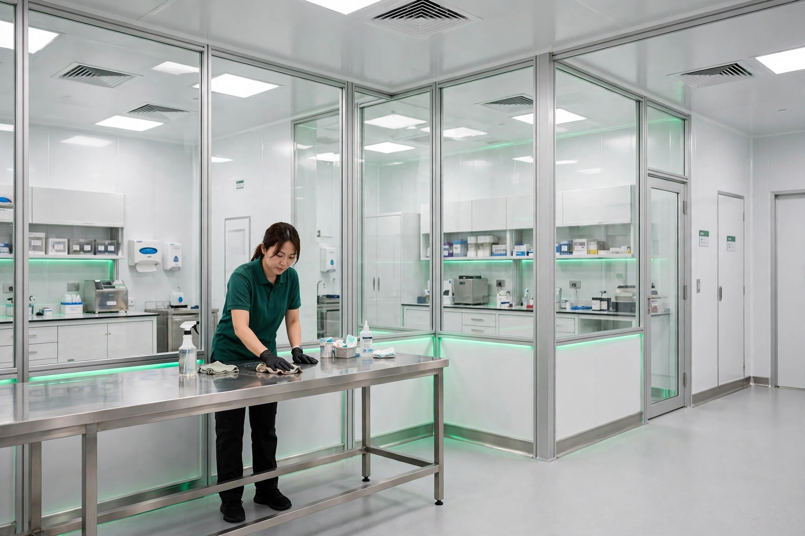

Protocol-led cleaning
for controlled spaces.
Cleanroom cleaning is the protocol-led cleaning of controlled environments — laboratories and production spaces where dust and particles are controlled to defined cleanliness standards. It means trained technicians working to the facility's own procedures, with approved materials and documented service, so the cleaning never compromises the work the room exists for. Flawless Bio Clean's owner holds a Cleanroom certification, and the team cleans cleanrooms and labs across Arizona to facility-supplied protocols.
By Yvette Valenti, Owner & Founder · November 22, 2026
Cleanroom & lab cleaning ↗
The full picture.
What a cleanroom actually is
A cleanroom is a controlled environment: a space where the level of particles in the air and on surfaces is deliberately kept low, because the work inside it cannot tolerate contamination. Semiconductor production, medical and laboratory work, and precision manufacturing all depend on spaces like this. Everything about the room is managed toward that standard — the air, the materials that come in, the procedures people follow inside it. Cleaning is not separate from that system. Cleaning is one of its working parts.
That is what makes cleanroom cleaning a specialty rather than a chore. The goal is not a room that looks clean. The goal is a room that stays within the standard the facility works to — and a cleaning process that supports the standard instead of quietly working against it.
Why ordinary janitorial cleaning is not enough
Conventional cleaning is built for appearance and general hygiene, and for most spaces that is exactly right. In a controlled environment it can be the wrong tool. The wrong products can leave residues. The wrong materials can shed particles instead of removing them. The wrong technique can move contamination from surface to surface. And a cleaner working without the facility's procedures — its gowning requirements, its entry and exit discipline, its work instructions — can undo in an hour what the room's systems maintain around the clock.
Cleanroom cleaning starts from the opposite direction: the facility's own protocol leads, and the cleaning is built to it. Approved supplies, defined work instructions, technicians who understand why the procedures exist — that is the difference between cleaning a controlled space and simply cleaning in one.
What the work involves
It begins with the facility's requirements, not a generic checklist. Our team works with each customer to understand the restrictions, materials, documentation and service schedule the space requires — the same way our cleanroom and lab cleaning is scoped for every facility. Team assignments, approved supplies and work instructions are aligned to the facility's protocol, gowning procedures are followed as the facility defines them, and the service is documented to the standard the facility keeps.
The owner of Flawless Bio Clean holds a Cleanroom certification, and the work is performed by our in-house technicians — trained to the protocol, never subcontracted crews learning your procedures on your time. Schedules are built around the facility's rhythms, so cleaning supports production and lab work instead of interrupting it.
Documentation is part of that discipline. Facilities that work to defined standards need a record of the service performed — what was cleaned, when, and to whose procedure. That record-keeping is built into the scope from the start, alongside the schedule and the work instructions, so the cleaning supports the facility's own quality system rather than sitting outside it.
Why Arizona facilities are asking
Arizona's tech and medical footprint keeps growing — semiconductor facilities, laboratories, medical offices and the data centers that support them, concentrated in the Valley's tech corridor and spread across the state. Every one of those facilities runs controlled or sensitive spaces, and every one needs those spaces cleaned by a team that treats protocol as the job. That is the work Flawless Bio Clean's certified specialty family was built for — cleanroom and lab cleaning alongside semiconductor facility cleaning and data center cleaning, under one standard of care.
The team serves facilities statewide, including cleanroom cleaning in Chandler, cleanroom cleaning in Phoenix and cleanroom cleaning in Mesa. If your facility works to a protocol, start with a conversation: call (480) 589-6200 or email info@flawlessbclean.com, Monday through Friday, 8 AM to 5 PM, and the scope will be built to your procedures from the first visit.
Good questions.
Clear answers.
Straight answers, the same ones we give on the phone. Anything more specific to your situation, one call settles it.
One call routes you to the right service — no obligation, no pressure.
Call (480) 589-6200Can your team follow our cleanroom SOP and gowning procedures?
Yes. Cleanroom service is built to facility-supplied protocols — your SOP, your gowning procedures, your work instructions. Understanding those requirements is the first step of every scope, before any cleaning is scheduled.
What kinds of facilities do you clean?
Cleanrooms and laboratories, semiconductor and microelectronics environments, medical offices and data centers — controlled and sensitive spaces across Arizona, cleaned to each facility's own protocol by an in-house, certified team.
How does cleanroom cleaning service start?
With a conversation about your space and your procedures. Call (480) 589-6200 or email info@flawlessbclean.com, Monday through Friday, 8 AM to 5 PM — the scope, schedule and documentation are built from your protocol from there.